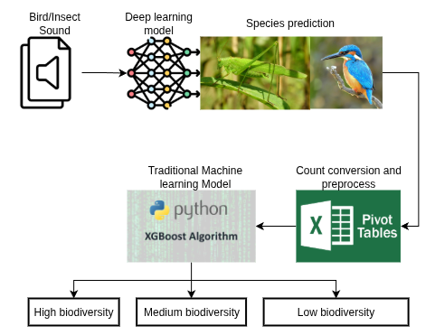

Biodiversity Score Prediction¶
Outlines¶
Overview of Biodiversity Score Level Prediction¶
This project predicts regional biodiversity scores through a two-stage workflow Figure 1: 1. bird and insect sound classification and the 2. biodiversity score level prediction.
- Bird and Insect Sound Classification Audio recordings are collected by deployed AudioMoth devices. As illustrated in Figure 1, the recordings are preprocessed and fed into a deep learning classifier based on a modified implementation of the BirdCLEF 2023 4th Place Solution. The model identifies bird and insect species and also detects non-biological sounds such as human speech, other human-generated noises, and vehicle sounds. It was pre-trained on species recordings from Xeno-canto and noise/no-call recordings from our own data collection.
- Biodiversity Score Level Prediction For each region, the frequency of occurrence of every detected species and noise class is aggregated from the classified recordings. These frequencies serve as input features to a traditional machine learning model (XGBoost), which predicts the region’s biodiversity score level: high, medium, or low.

Figure 1: Biodiversity score level prediction overview.
Data¶
This section provides an overview of the data used in this project. We summarize the sources, label quality, use in training, geographic filtering, and the class list.
Sources¶
Public: Expert-labeled wildlife audio from Xeno-canto, covering birds and insects. Self-collected: Field recordings captured with AudioMoth devices in tea plantations around Chiang Mai, Thailand.
Audio Data Labels¶
Xeno-canto recordings include expert-provided species labels. The self-collected recordings lack ground-truth annotations.
Data Usage¶
The sound-classification model is trained primarily on the labeled Xeno-canto data. Additional noise examples from our self-collected recordings (e.g., human speech, noises from human activity, vehicles, and other environmental noises) are included to improve robustness.
Geographic filtering¶
To reduce label noise and improve relevance, we removed species not known to occur in Thailand, with a particular focus on the Chiang Mai region.
Class list¶
The final set of bird and insect species used in training and inference is documented in
species.txt and species_count.txt.
The number of classes included in the analysis is summarized in Table 1.
Table 1 — Summary of the Number of Classes in Training Data¶
| Type of Sound | Class Count |
|---|---|
| Bird Species | 66 |
| Insect Species | 14 |
| Noise / No-Call | 10 |
| Total | 90 |
Models¶
Sound Classification Model¶
Biodiversity Score Level Prediction Model¶
- Input: Mel-spectrograms extracted from audio recordings.
- Feature Extraction: Convolutional Neural Networks (CNNs) for spatial feature learning.
- Classification Layer: Fully-connected layers with softmax output for multi-class classification.
- Training Details:
- Optimizer: Adam
- Loss: Categorical Cross-Entropy
- Learning Rate: (e.g., 0.001)
- Epochs: (e.g., 50)
- Batch Size: (e.g., 32)